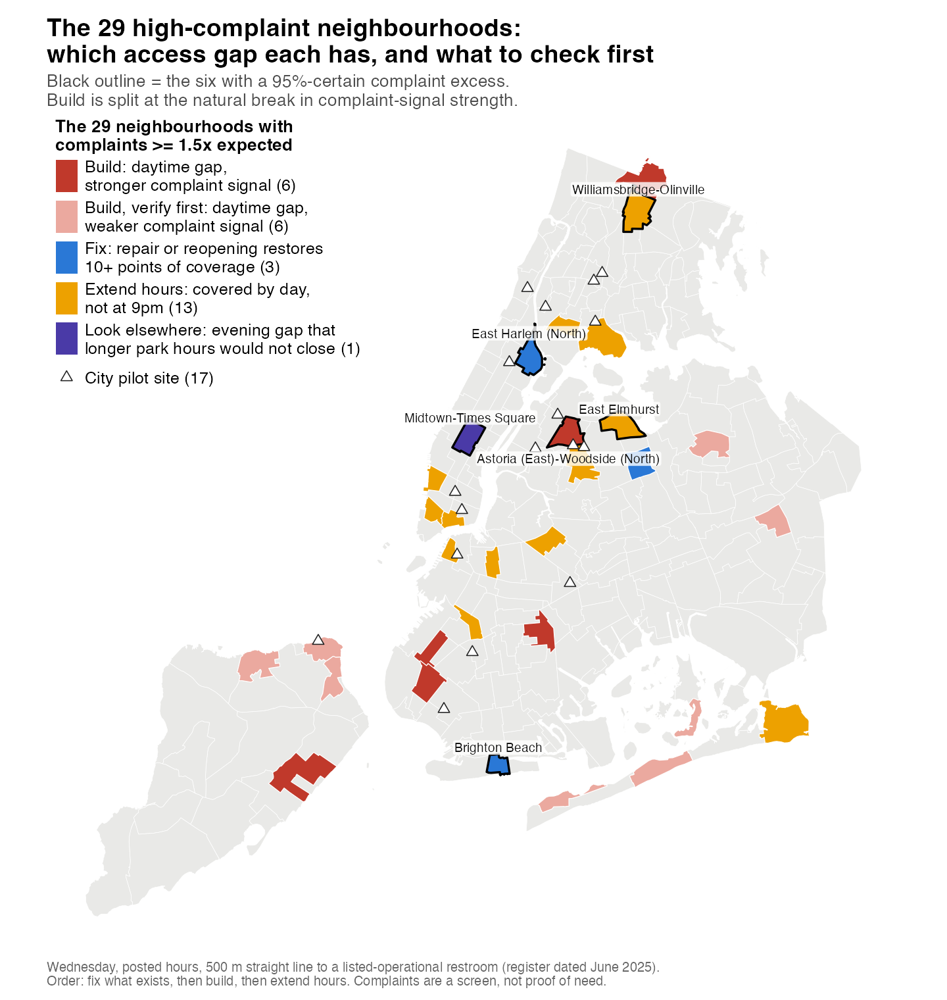
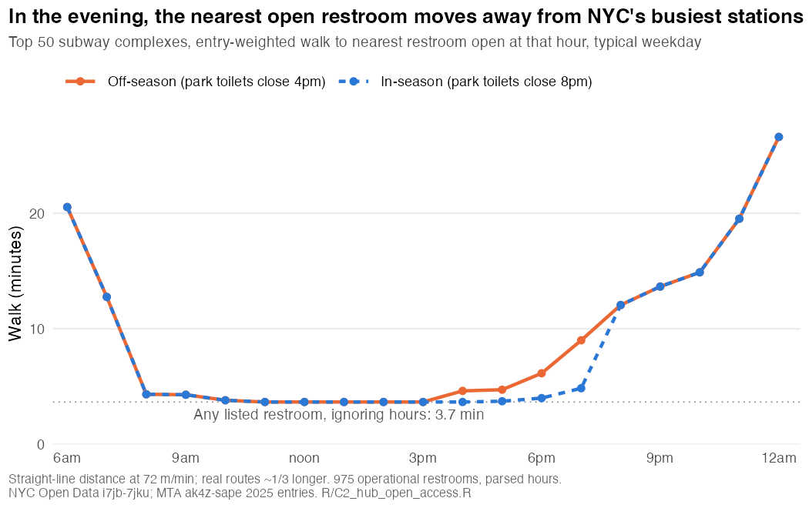

PMBA6093 · Analytics for Managers · Final project
When nature calls, where should New York answer?
New York has set a target of 2,120 public restrooms by 2035, and its register lists 975. Complaints show where there is a problem; distance, opening hours and inspections show which access gaps coincide with them. The answer to "where should the City build first?" is: in six of the 29 problem neighbourhoods, with six more to check on the ground. In most of the rest, a restroom is there but closed or broken.
What changed on 25 Sep: the walkthrough is rebuilt as four layers on one map: complaints find the problem; distance, hours and inspections diagnose it; each of the 29 neighbourhoods gets one action. The 24 Sep version is kept in the Merged archive tab.
Walkthrough
In one minute
- Question: New York has promised 2,120 public restrooms by 2035; its register lists 975. Where should it build first?
- Step 1, find the problem: a complaint model flags 29 neighbourhoods with at least 1.5× the complaints their crowds predict.
- Step 2, check the access gap: for each of the 29 we ask whether a restroom is missing, closed when needed, or broken. Each answer points to a different action to verify.
- Answer: fix 3 neighbourhoods by repairing or reopening restrooms they already have; build first in 6 with a daytime gap and a stronger complaint signal (about 7 units), and check 6 more on the ground; test longer hours in 13 where restrooms close before evening.
- Then: measure which of these actually reduces the problem. Midtown has an evening gap that longer park hours would not close, so it needs a different look.
Tags show where each result comes from: In class · S5 a technique from the course that we applied; Beyond class an analytics technique outside the course that we applied; From a source a fact we looked up.
1 — The question
- Local Law 58 (2025) sets a target of 2,120 public restrooms by 2035, a gap of 1,145 on today's register; the siting strategy is reportedly due 1 Nov 2026 (PIX11). From a source
- The City's register lists 975 working public restrooms (656 run by NYC Parks, most of the rest libraries). Only 8 are open 24 hours, all highway gas stations or a snack bar. The register dates from June 2025.
- A 17-unit modular pilot started in September 2026: $4M, one year, 7am–10pm. From a source
No dataset records "needed a toilet and couldn't find one", so need can't be measured directly. We use four analyses as layers: one finds where there is a problem; three show which access gap is present there. Each gap points to a candidate action to verify. Layers sitting on the same map don't prove the gap causes the complaints, which is why the plan ends with trials.
| Layer | Question | Method |
|---|---|---|
| 1. Problem | More complaints than the crowds predict? | Complaint model |
| 2. Missing | No restroom within 500 m, even by day? | Distance to nearest restroom |
| 3. Closed | A restroom by day, none by 9pm? | Opening hours, hour by hour |
| 4. Broken | Coverage depends on closed or failing restrooms? | Parks inspection records |
2 — Layer 1: where is there a problem?
The signal is 311 "Urinating in Public" complaints: 7,926 from 2020 to 2026.
- Cleaning. The top 1% of addresses file 22.3% of complaints in public places, so each address counts once a month. S1–2 · data cleaning
- Adjusting for crowds. A count model predicts each of 197 neighbourhoods' expected complaints from its subway riders, workers, hotels, residents, borough and age mix. Beyond class · negative binomial regression
- Testing it. On neighbourhoods it never saw (200 random 70/30 splits), it orders them by complaints better than subway ridership alone: rank correlation 0.79 vs 0.70, winning 96% of the time. Adding DOT's modelled pedestrian demand did not improve it (0.78), consistent with the model already capturing much of this information. S4, S7 · correlation, train/test
- Result. 29 neighbourhoods have at least 1.5× the complaints their crowds predict. In six we are statistically confident (95%): East Harlem (North), Astoria (East)–Woodside (North), East Elmhurst, Williamsbridge–Olinville, Brighton Beach and, only just, Midtown–Times Square. Beyond class · empirical Bayes
Why 29, not 6: complaints measure who complains as well as need. On phone complaints only, none of the six stays 95% certain, and the top of the list shifts between 2020–22 and 2023–26. So the complaint model is a wide screen, and layers 2–4 do the sorting.
3 — Layer 2: is a restroom missing?
For every resident, we find the distance to the nearest listed restroom open at 2pm on a weekday. If none is within 500 m (about a 7-minute walk), there is a daytime access gap. S6 · spatial analysis
- This builds on a teammate's screen of distance from subway stations to the nearest restroom Team research · Steph, with a service standard proposed by another Team research · Giorgia.
- Citywide, 72% of residents have a restroom within 500 m at 2pm. In 13 of the 29 neighbourhoods, 40% or more of residents have none, even by day (one of them, Brighton Beach, falls below the 40% gap threshold after reopening; see Layer 4).
- A daytime gap is common: 77 of all 197 neighbourhoods have one, mostly lower-density parts of Staten Island and eastern Queens. A standard based on residents favours those areas, which is why the complaint screen comes first and why build calls are ranked by how confident that signal is.
4 — Layer 3: is it closed when needed?
We turned every restroom's posted hours into hour-by-hour availability. Beyond class · parsing opening hours
| Weekday | 2pm | 9pm |
|---|---|---|
| Restrooms open | 954 | 57 |
| Residents with an open restroom within 500 m | 72% | 4% |
| 50 busiest subway stations with none within 500 m | 4 | 43 |
| Busiest streets (DOT) with none within 500 m | about 3% | 64% |
- 30% of public-urination complaints come between 6pm and midnight, against 18% of another 311 type (dirty streets). S1–2 · descriptive comparison
- 641 of the 975 restrooms post only "8am–4pm, open later seasonally". Keeping these 641 existing restrooms open to 10pm would lift 9pm resident coverage by 57 points; 100 new restrooms would add 27. Neither side is costed here.
- In 13 of the 29, residents are covered by day but not at 9pm, and longer park hours would recover most of that gap. At night this is close to the default: 26 of the 29 pass this test, so Extend applies wherever there is no daytime gap or fix.
Estimated from posted hours and straight-line distance; actual evening hours need checking on the ground. At 9pm, 43 stations lack an open restroom if parks close by 8pm, 20 if they stay open to 10pm.
5 — Layer 4: is it broken?
A listed restroom only helps if it works. NYC Parks inspectors rate each restroom acceptable or unacceptable; 25,912 such ratings are on file.

- Failure is rising: one in five inspections was unacceptable in January–June 2026 (20.1%), back at 2012–14 levels after a record low of 8.5% in 2024 (+11.6 points, 95% CI 7.8 to 15.3). S3 · confidence interval
- Same buildings getting worse: comparing each restroom with itself, +11.4 points. S5 · fixed effects
- Not just tougher inspectors: from 2024 to 2026, restroom failure rose 11.9 points more than the same inspectors' ratings of parks without a restroom (95% CI 7.8 to 16.0). This compares restroom ratings with whole-park ratings, so it strengthens the case against stricter grading but cannot rule out a change in how restrooms alone are graded. S5, S8 · difference-in-differences
- 80 of Parks' 736 restrooms are in long-term closure (46 for repairs); about 34 of these are still counted in the 975. Independently, the City Council's random audit found 36 of 337 rooms locked during posted hours Team research · Steph, Candy.
- In 3 of the 29, repairing or reopening restrooms that already exist would restore 10 or more points of coverage. In Brighton Beach, reopening its 4 long-closed restrooms would take resident coverage from 48% to 81%. Two of the four are beach comfort stations, placed approximately and open seasonally; without them the gain is still 27 points.
Which restrooms to check first? Ranking sites by their failure share over the past three years finds a failing restroom in about 1 in 5 extra checks, against 1 in 8 at random, tested on 2025–26 data the rule never saw. Logistic regression did no better, and a decision tree did worse (54 failures found against 86). S6–7 · logistic, tree, train/test
6 — The diagnosis: what to do where
Each of the 29 gets one candidate action, in a set order: fix what already exists; build where a daytime gap remains; extend hours where the gap is at night; otherwise look for other causes. The order reflects a preference for using what exists; it is not a costed optimisation.

Open the interactive map (every layer's value per neighbourhood, the pilot sites and candidate build sites).
| Action | Areas | Neighbourhoods |
|---|---|---|
| Fix: repair or reopen | 3 | Brighton Beach, East Harlem (North), Corona. All three also have an evening gap, so fix first, then extend hours |
| Build: daytime gap, stronger complaint signal | 6 | Astoria (East)–Woodside (North), East Flatbush–Rugby, Wakefield–Woodlawn, New Dorp–Midland Beach, Dyker Heights, Sunset Park (Central) |
| Build, verify first: daytime gap, weaker complaint signal (4–15 complaints) | 6 | East Flushing, Port Richmond, Hollis, Breezy Point–Rockaway Park, St. George–New Brighton, Tompkinsville–Stapleton |
| Extend hours: covered by day, not at night | 13 | East Elmhurst, Williamsbridge–Olinville, Hunts Point, Brooklyn Heights, Far Rockaway–Bayswater, Chinatown–Two Bridges, West Village, Tribeca–Civic Center, Woodside, Bushwick (West), Clinton Hill, Windsor Terrace–South Slope, Melrose |
| Look elsewhere: evening gap longer park hours won't close | 1 | Midtown–Times Square: a 48% evening gap, but few park restrooms nearby, so the answer may lie with transit or street units, or with causes other than supply |
- All four Staten Island areas have a daytime gap, but three rest on 4–8 complaints and are in the verify-first group. The Build list is split at the natural break in how likely it is that complaints genuinely run 1.5× above expected: 80–100% for the stronger six, 24–52% for the rest. This orders the list; it is not the 95% test used for the confident six in section 2 (only Astoria is in both).
- How much the thresholds matter: at a 30% gap threshold instead of 40%, 1 area changes; at 400 m instead of 500 m, 4 do (the repair layer stays at 500 m). At a stricter 50% threshold the Build list halves (to 6). At a 5-point repair threshold instead of 10, Fix grows from 3 to 7, taking Astoria, East Flatbush and Hollis out of Build. Of the six stronger Build areas, only New Dorp and Wakefield stay Build under every variant; the rest depend on the gap or repair threshold. The repair rule was tightened on review, so that restrooms already backed up by others don't count. Beyond class · sensitivity analysis
7 — Where exactly to build
Inside the 12 Build areas, we add sites one at a time, each covering the most residents still without a restroom within 500 m. This is the standard method for siting a limited number of facilities (the Maximal Covering Location model, Church & ReVelle 1974). Beyond class · maximal covering optimisation
- The candidate sites limit the answer. On the sites we could identify (Parks land, plazas and busy-street frontage), only 2 of the six stronger Build areas get below a 40% daytime gap. In an unrestricted scenario using any residential grid point, about 7 units, one or two per area, bring all six below 40%, still leaving 8–33% of their residents uncovered. For all 12 it would take about 14. None of these points has been checked for feasibility.
- That points to modular street units, like the pilot's, each checked on the ground for space, utilities and access. The site search adds one site at a time, a standard heuristic, not a proof of the minimum number.
- The pilot barely overlaps: 2 of its 17 units fall in Build areas (Astoria, St. George), 1 in an Extend-hours area (Woodside). As a separate benchmark, a citywide model optimising 9pm subway-rider coverage finds the pilot's 17 add about 7 points against 38 for its own first 17 picks. That is not the objective used for this shortlist, and the pilot served other goals.
8 — How the City will know it worked S8–9 · A/B test design
- Hours trial: start with Gun Hill (Williamsbridge) and Gorman (East Elmhurst) playground restrooms, then the 13 Extend-hours areas; roll out in random order; measure public-urination summonses (a drop of about 33% would be detectable). Keeping restrooms open from 4pm to 10pm (six extra staffed hours) would cost about $2.75M for ten months for the 43 Parks restrooms, $4.41M for all 69. Beyond class · power analysis
- Check trial: among high-risk restrooms, randomly choose which get the extra check and repair first; compare their next inspection.
- Pilot and new builds: judge by hours found open and working, not units installed Team research · Steph, Candy.
9 — Recommendation
| Step | Where | Do this |
|---|---|---|
| 1. Fix | Brighton Beach, East Harlem (North), Corona | Reopen and repair restrooms that already exist; send extra checks by 3-year failure history |
| 2. Extend hours | 13 areas | Run the hours trial; keep park restrooms open to 10pm where it works |
| 3. Build | 6 areas with a stronger complaint signal (about 7 units), then 6 more after ground checks | Modular street units first; verify each site on the ground before permanent buildings. "First" means first for feasibility checks, not approval to spend |
| 4. Look elsewhere | Midtown–Times Square | The evening gap needs transit or street units, not park hours; check other causes first |
What this does not claim: that complaints prove need, or that any of these actions reduces the problem. The trials are how the City would find out.
Limits and open questions
What the analysis cannot show, and the checks behind each layer.
Open questions
- Do the access gaps cause the complaints? Not shown. The layers show where gaps and excess complaints coincide; earlier tests found that, once crowds are counted, supply measures do not predict complaints. The actions are candidates to verify and test, not a causal diagnosis.
- Is a daytime gap need? 77 of 197 neighbourhoods have one, mostly lower-density areas; a resident-based standard favours them. Build calls are therefore ranked by the strength of the complaint signal: six of the twelve rest on 4–15 complaints and are marked "verify first".
- Is the complaint screen finding real need? Complaints measure who complains as well as need. On phone complaints only, none of the confident six stays 95% certain, and the list shifts between 2020–22 and 2023–26 (rank correlation 0.31). That is why all 29 are screened and layers 2–4 decide the action.
- Did Parks change its restroom rating rules around the turn of 2026? The failure rise builds from November 2025. Inspectors rated parks without a restroom no worse, which argues against a general increase in strictness but not a restroom-only rule change.
- Do longer hours or targeted checks reduce anything? Not yet known. The trials in section 8 are how to find out.
- Are the build sites buildable? Candidate sites are map points on Parks land, plazas, busy-street frontage or, in a diagnostic run, any residential point. None has been checked for space, utilities or approval. The site search adds one site at a time (a standard heuristic), so "about 7" is an estimate, not a proven minimum.
1. The diagnosis rules
- Thresholds are choices: 500 m, 40% of residents, 10 points of coverage, 9pm, and the split of Build at the natural break in complaint-signal strength. Section 6 reports how the result changes when they move: Build falls from 12 to 6 at a 50% gap threshold; Fix rises from 3 to 7 at a 5-point repair threshold. The 400 m run changes the missing and closed layers only. The 9pm hour is not varied.
- The repair rule was tightened after the first results (from 8 Fix areas to 3), so that a broken restroom already backed up by other restrooms does not count. The order of actions (fix, build, extend) is a stated preference, not a cost optimisation.
- The repair gain combines two things: restoring restrooms the register already counts but inspections show closed or failing, and reopening long-closed ones outside the count. Closed restrooms are matched to the register by location, not by a verified asset list; five are placed at one point inside their park, including two Coney Island beach stations, which are also seasonal. Each needs checking before a repair is promised.
- "Missing" counts every restroom the register lists as operational, including some Parks lists as closed; "broken" is what corrects for that. A broken restroom that other restrooms already back up does not trigger Fix.
- Extend hours applies almost everywhere at night (57 restrooms open citywide at 9pm), so it becomes the action wherever there is no daytime gap and no fix.
- Residents are spread evenly over a 150 m grid within each census tract, leaving out park land; 0.1% fall outside residential neighbourhoods and are not assigned. "Missing" means no listed restroom open at 2pm within 500 m, not proof that a new building is the only answer.
2. Distance and hours
- Distances are straight-line; real walks are longer. Hours are as posted: most Parks restrooms say only "8am–4pm, open later seasonally", so the 9pm picture assumes they close by 8pm (with a 10pm scenario shown).
- The station and street figures are for Monday–Thursday; on Friday evening libraries close at 5pm and coverage is lower.
- DOT's pedestrian demand is modelled, not counted.
3. The complaint model
- It predicts complaints, not need. It may partly reflect street homelessness or nightlife, which it does not include.
- Midtown–Times Square is borderline (0.83 once model uncertainty is included). It has a large evening gap, but keeping park restrooms open later would recover too little of it, so it needs its own investigation.
4. Inspections and the check rule
- 2024 is the lowest January–June failure rate in 22 years; 2026 is back at 2012–14 levels.
- About half the 2026 rise is restrooms failed with nothing inside rated, most likely found closed; unconfirmed.
- The 3-year rule finds failures the next regular inspection would record; it shows better detection, not prevention. On 2024 it ranked 5th of 6 candidates; it matched the model only on the test years.
- Neighbourhood failure rates for 2026 rest on few inspections (2–18 each), so they are not used for the action.
5. Costs and trials
- Capital costs are funding figures: a new building median about $4M, reconstruction about $1.5–1.8M. Modular units: $4M for the 17-unit pilot including a year of service.
- For the 13 Extend areas, the hours trial could detect only a drop of about 33% in summonses, from a simplified calculation that ignores the staggered rollout; summonses partly track policing (alcohol summonses serve as a placebo). Its cost assumes 6 extra staffed hours a day (4pm to 10pm, matching the coverage scenario) at $35 an hour.
- "Extendable" assumes the placeholder park restrooms close at 4pm and could open to 10pm. If many already stay open later in summer, the Extend group shrinks; the hours trial is where to check that first.
6. Data dates
- Restroom register: June 2025. Inspections: to 28 June 2026. Complaints: 2020 to September 2026. Pilot sites: 16 September 2026 announcement.
Archived version of 24 Sep 2026 (the merged walkthrough), kept for comparison. Some figures and claims are superseded — current figures are in the Walkthrough.
Merged walkthrough (24 Sep)
0 — The situation
- Local Law 58 of May 2025 sets a target of 2,120 public restrooms by 2035. The City's register lists 975 operational today, so the gap is 1,145.
- The City's siting strategy under the law is due on 1 Nov 2026.
- Earlier laws asked for sites without funding them: Local Law 114 of 2022 wanted a feasible site in every ZIP code area, and Local Law 92 of 2025 reports on the projects at those sites. Team research · Steph, Candy
New York has about a third of the public toilets per resident of the best-served cities. Counted the same way, as government-run toilets on streets, in parks and plazas and at transit stops, it has 9.0 per 100,000 residents. Team research · Shawn (idea)
| City, one counting rule | Public toilets per 100,000 residents |
|---|---|
| Paris | 27.2 |
| Zurich | 24.8 |
| San Francisco | 24.7 |
| Vancouver | 15.4 |
| Hong Kong, FEHD list only | 10.1 |
| Toronto | 9.7 |
| Berlin | 9.2 |
| New York City | 9.0 |
Hong Kong's list excludes park toilets run by another department; with an approximate count of them it is about 18.4.
Toronto and Berlin are close to New York, so the gap is with the leaders, not with every large city.
The City has already started a 17-unit modular pilot:
| The pilot | Detail |
|---|---|
| Units | 17 modular restrooms |
| Start | September 2026, for one year |
| Budget | $4M |
| Open | 7am–10pm |
| Sites, published 16 Sep | None in Midtown; 4 in western Queens, 13 elsewhere |
Sources: PIX11, Aug 2026, for the deadline; NYC Mayor's Office release of 16 Sep 2026 for the pilot and its sites Team research · Steph, Giorgia.
The City has four decisions to make: where to put restrooms, when they need to be open, what to do first, and how to measure the pilot it has already started. The sections below take each in turn.
1 — Where
Data cleaning, negative binomial regression, out-of-sample validation, hot-spot mapping
The signal is 311 "Urinating in Public" complaints. Nobody records "needed a toilet and could not find one". This is the closest thing that is dated and mapped: 7,926 complaints from 2020 to 2026.
Clean it first. The top 1% of addresses produce 22.3% of complaints. In East Harlem, 223 of 384 complaints came from five addresses on one block.
Keeping complaints in public places leaves 4,706, and counting each address at most once a month leaves 3,629. Otherwise five addresses on one block would set East Harlem's rank.
Adjust for crowds. Busy places generate more complaints. For each of 197 neighbourhoods, the model predicts the complaints it would normally produce, given its subway riders, jobs, hotels, residents, income, age mix and borough.
Observed ÷ expected is the unmet-need ratio. Brighton Beach, for example, had 24 complaints against 6.2 expected: a ratio of 3.85×.
Test it against a one-line rule. The rule ranks neighbourhoods by subway ridership alone. The model is fitted on 70% of neighbourhoods and scored on the unseen 30%, over 200 random splits.
On rank agreement with actual complaints, the model scores 0.788 against the rule's 0.703. It wins in 96% of 200 splits.
Shaded by observed ÷ expected complaints. Grey means the two match; stronger colour means more complaints than the area's crowds explain.
The answer: 29 neighbourhoods sit at 1.5× or more of their expected complaints. Six clear 0.95 probability that their true complaint rate is above 1.5× expected: East Harlem (North), Astoria (East)–Woodside (North), East Elmhurst, Williamsbridge–Olinville, Brighton Beach and Midtown–Times Square. Interactive map.
That confidence is about excess complaints. Re-ranked on phone-filed complaints alone, 4 of the six fall out of the top 25, so it is weaker evidence of excess need.
Where exactly: the complaint map shows the blocks. Within each of the six, complaints cluster in a few hot spots. The table shows the largest one, whether it sits beside a subway station, and which agency controls the ground.
| Area | Largest hot spot | Complaints | Beside a station? | Natural owner |
|---|---|---|---|---|
| East Harlem (North) | E 122 St between 2nd and 3rd Ave | 42 | Mixed: 3 of 5 hot spots | DOT, street frontage |
| Astoria (East)–Woodside (North) | 28 Ave at 56 Pl. Thin: 3 addresses, none after 2022 | 36 | No: 0 of 2 | DOT, street frontage |
| East Elmhurst | 25 Ave at 85 St, beside Gorman Playground | 20 | No: nearest station 1.7 km | Parks |
| Williamsbridge–Olinville | Cruger Ave at Magenta St, beside Gun Hill Playground | 17 | Mixed: 1 of 2 | Parks |
| Brighton Beach | Ocean Parkway malls at the Ocean Pkwy station. Thin: 24 complaints in the whole area | 4 | Mixed: 2 of 3 | MTA / DOT |
| Midtown–Times Square | Central Park South at 57 St and 7 Ave | 17 | Yes: 5 of 5 | MTA / DOT |
In Midtown the complaints cluster at station exits. In East Elmhurst and Williamsbridge it sits at playgrounds whose restrooms are locked at night. Astoria's hot spot rests on 3 addresses and stops in 2022, so it may reflect one persistent caller or a problem that has ended.
A hot spot counts as beside a station when its centre is within 250 m of one. The owner follows a stated rule: beside a station, MTA or DOT; within 60 m of a park, Parks; otherwise DOT. It starts a discussion; it does not settle one.
The pilot mostly misses the need. 1 of 17 units sits in one of the six, at Northern Blvd and 54 St, on the area's boundary. 3 of 17 are in the 29, and the typical site's neighbourhood ranks 82nd of 197.
The ranking's value is in where the next units go. The pilot is already sited; the LL58 strategy decides the next 1,145.
Caveat: the 1.5× cut-off is a budget line, not a natural boundary.
2 — When
Hours parsing, walking distance by hour, complaint timing
Access collapses in the evening. Counting only restrooms with genuine posted hours, 18% of residential land is within a five-minute walk of an open restroom at 3pm. At 9pm it is 2%.
Share of each neighbourhood within a five-minute walk of a restroom open at that hour, counting only restrooms with genuine posted hours. Interactive map.
On a weekday evening, only 57 restrooms are open at 9pm. The chart shows how far a rider leaving one of the 50 busiest subway stations must walk to reach a restroom that is open at that hour. Team research · Steph

| Top 50 hubs, Wednesday | Average walk | Hubs with no open restroom within 500 m |
|---|---|---|
| 2pm | 3.7 min | 4 of 50 |
| 6pm, off-season: park restrooms close 4pm | 6.2 min | 21 of 50 |
| 6pm, in-season: park restrooms close 8pm | 4.0 min | 9 of 50 |
| 9pm, either season | 13.7 min | 43 of 50 |
| 9pm, if park restrooms stay open until 10pm | 5.9 min | 20 of 50 |
The true summer closing time is unknown. 641 of the 975 operational restrooms show the same placeholder hours, "8am-4pm, Open later seasonally". The main 9pm row assumes park restrooms close by 9pm.
"Open 24 hours" means a gas station. The register lists 8 facilities as open 24 hours. All 8 are parkway gas stations or a parkway snack bar. Team research · Steph
Among the six priority areas, the evening gap is worst in Astoria and smallest in Midtown. The table gives the median walk at 9pm from where complaints are filed to the nearest open restroom.
| High-confidence area | Walk at 9pm | Restrooms open at 9pm inside it |
|---|---|---|
| Astoria (East)–Woodside (North) | 47.6 min | 0 |
| Williamsbridge–Olinville | 36.6 min | 0 |
| Brighton Beach | 25.5 min | 0 |
| East Harlem (North) | 24.5 min | 0 |
| East Elmhurst | 23.1 min | 2 |
| Midtown–Times Square | 7.9 min | 6 |
Astoria's figure rests largely on the thin hot spot flagged in section 1, which holds 36 of its 59 complaints and none after 2022. Williamsbridge–Olinville, at 36.6 min, is the worst case whose complaints run through 2026.
Midtown is the best served of the six at 9pm, so a shortage of open restrooms does not explain its excess complaints. Nightlife or street homelessness may; the Limits tab keeps this open.
Complaints lean toward the evening and the night. 30% are filed between 6pm and midnight. Against 311 dirty-condition complaints, which reflect the same calling habits, urination complaints run 1.4–1.9× as high between 6pm and midnight and 1.4–2.3× between midnight and 5am.
That pattern fits closing times. It fits nightlife and alcohol just as well.
Why complaints concentrate here: access is the leading hypothesis. Outside evidence is mixed, and our data cannot confirm it, so it should be tested.
The outside evidence comes from San Francisco, not New York. There, 13 new staffed Pit Stop restrooms were followed by 12.47 fewer feces reports a week, p = 0.0002, but three Pit Stops given longer, 24-hour service saw 12.00 more a week, p = 0.0016, which the authors call unexpected (Amato et al., 2022). A 2025 follow-up covering 2009–2022 found that "the effect appears to be small" (PLOS ONE, 2025). Team research · Steph
In New York, the largest hot spots in Williamsbridge and East Elmhurst sit 47 m and 126 m from park restrooms that are locked at night.
Our data cannot confirm it citywide. Once crowds are counted, no measure of supply predicts complaints: not the number of restrooms, not the number open at 9pm, not the share in parks. Most park hours are placeholders, counts are thin, and restrooms tend to be built where problems already are, which can hide an effect.
The hours gap in the data is fixable. Paris publishes one open dataset of every public toilet with its status and opening hours.
Whether night closures drive complaints is untested, and cheap to test. Section 4 sets out a test at the two named park restrooms.
Caveat: complaint times are filing times, not the time of the incident.
3 — What first
Panel data, facility fixed effects, placebo test, delivery times, cost analysis
The existing stock is deteriorating. This is the strongest result here. NYC Parks inspectors grade every comfort station on a schedule: 31,768 inspections.
Comparing the same January–June window each year, the unacceptable share was flat for three years, then jumped in 2025–26.
| January–June | Rated unacceptable |
|---|---|
| 2022 | 9.4% |
| 2023 | 9.0% |
| 2024, the lowest year | 8.5% |
| 2025 | 11.3% |
| 2026 | 20.1% |
That is 9.4% → 20.1% since 2022, and 8.5% → 20.1% since 2024. The 2024 and 2026 figures rest on 743 and 693 rated inspections.
- It is the same buildings getting worse. With facility fixed effects, 2026 is +11.4 pp above 2024.
- It does not look like stricter marking. The 7 inspectors who rated restrooms in both years marked litter no worse, 0.016 → 0.011, while structural failures rose from 0.044 to 0.210.
- A field audit finds the same problem on the ground. The City Council's random "Good to Go?" audit, Aug–Sep 2025, found 36 of 337 rooms locked during posted hours, all in parks, and 129 of 301 open rooms missing a basic necessity. It is a single snapshot, so it confirms the level, not the trend. Team research · Steph, Candy
- 80 of 736 Parks comfort stations are under long-term closure, 46 of them for repairs.
Each option is priced per area, one facility each, like for like:
| Option | Cost | Source |
|---|---|---|
| Build a new restroom | $4.0M | Median of 68 NYC capital projects. DDC's 2026 contract works out at $3.86M per building Team research · Steph, Candy |
| Install a modular unit, Portland Loo | $1.2M | NYC Parks' $6M pilot for five Portland Loos |
| Reconstruct an existing one | $1.66M | Median of 108 projects |
| Keep one restroom open 4 hours longer | $51,100 a year | Assumes $35/h staffing |
The lowest-cost option in each of the 29 places adds up to $24.1M in capital plus $0.51M a year to run the longer hours:
| Lowest-cost option | Places |
|---|---|
| Modular unit | 9 |
| Reconstruction | 8 |
| Longer hours | 10 |
| Monitor | 2 |
An area is classed "close early" when the median posted day of its restrooms is under 9 hours, or none is open to 22:00. All 10 have at least one restroom with real posted hours, and 9 of 10 keep the class when placeholder-hours restrooms are left out.
Dividing each option's yearly cost by its area's excess complaints, the lowest ratio is longer hours in East Harlem (North), at $5,199 per excess complaint a year. Next is a modular unit in Astoria (East)–Woodside (North), at $14,727. This ranks cost against the size of the problem; it is not a measured effect.
Longer hours are the cheapest option to test, not a proven fix. They beat a modular unit only if they are at least 63% as effective as one. The median costed area, of 27, has 1.8 excess complaints a year, too few to measure an effect area by area.
Repair is a service-quality priority, not a proven way to cut complaints. The decay is citywide rather than concentrated where complaints are high: in the 29 priority areas, 15 of 72 inspected comfort stations were rated unacceptable in 2026, against 116 of 507 elsewhere. Long-term closures run slightly higher there, 14 of 100 against 66 of 636.
Repair now, and test longer hours alongside. The stock is measurably decaying, and a reconstruction costs well under half as much as a new permanent building. It also delivers sooner: a median 4.5 years from design to completion, against 7.4 years for a new building, on 70 and 38 completed projects, p < 0.001.
A closed restroom serves nobody, while a reopened one serves whoever is there.
Caveat: the hours cost is an assumption. Hours stay the lowest-cost option only while staffing costs less than about $100/h, under this one-facility-per-area convention.
4 — How to measure the pilot
Power analysis, service metrics, randomised staggered trial
An impact evaluation of the 17 pilot units would be underpowered. Only 20 complaints a year are filed within 400 m of all 17 sites combined, during the pilot's opening hours. A before-and-after comparison with matched areas could detect only a 73% drop in complaints, or 44% using urination summonses.
With 1 of 17 units in a high-confidence area, the pilot cannot test the ranking either.
Judge the pilot on service: the hours it is actually open, not the units installed. Team research · Steph, Candy
- Cost per verified open hour divides total cost by the hours each unit was found open and working. Against scheduled hours the pilot costs $42.98 per unit-hour: $4M ÷ 17 units × 15 hours × 365 days. The Council audit found 36 of 337 rooms locked during posted hours, so scheduled hours overstate service.
- Stage gates. Verify that a site is really underserved, confirm the unit is open and working, then scale up. Only after that should a site get a permanent building.
- Data to require from the operator, site by site and week by week: open and closed timestamps, uses, faults, time to repair, and cost. Washington DC's pilot law, D.C. Act 25-172, already requires monthly reports on use and misuse.
Test impact where it can be seen: longer evening hours. Start with the two park restrooms beside the largest hot spots, Gun Hill Playground in Williamsbridge and Gorman Playground in East Elmhurst, and compare them with matched restrooms. Then extend the same design to the 10 areas that close early.
| Hours trial | Detail |
|---|---|
| Scope | The two named playground restrooms first, then all 51 restrooms in the 10 areas that close early |
| Rollout | Random, staggered order over ten months |
| Cost | $2.2M for ten months; $2.6M a year |
| Smallest change it can detect across the 10 areas: complaints | 156%; complaints are too sparse |
| Smallest change it can detect across the 10 areas: public-urination summonses | 37% |
The trial opens every restroom in the 10 areas, not the one per area costed above, so it tests the strongest version of the option.
Caveat: summonses partly track policing, so they cannot rank places. Within one area over time they can measure change, unless longer hours also change patrols, which the alcohol-summons placebo, a count of alcohol summonses that longer hours should not change, is there to catch.
5 — What we recommend
| Who | Do this | Cost |
|---|---|---|
| Mayor's Office: LL58 strategy, due 1 Nov | Site the next units by the need ranking and the hot-spot table. 14 of 17 pilot units are outside every priority area. Of the six, only East Elmhurst and Brighton Beach stay in the top 25 on phone-filed complaints alone | $24.1M capital for the lowest-cost option in all 29, plus $0.51M a year for longer hours |
| NYC Parks | Clear the repair backlog as a service-quality priority: the stock is decaying citywide, and reconstruction delivers in 4.5 years against 7.4. Run the evening-hours test at Gun Hill and Gorman Playgrounds alongside | $2.2M for the ten-month hours trial |
| MTA and DOT | Midtown–Times Square: monitor. It is the best served of the six, so the cause of its excess complaints is unresolved. If a unit is sited there, place it at the station exits, where its complaints cluster | — |
| All agencies | Publish service data, meaning verified open hours, uptime and real closing times, so the pilot can be judged | — |
6 — How we know it holds up
- The model scores 0.784–0.791 across six random seeds. A decision tree scores 0.720.
- Adding 1,886 chain cafés and fast-food outlets as informal supply leaves the ranking unchanged, at 0.997.
- Each of the six high-confidence areas was re-scored with itself left out, and all held.
- The weak points: the ranking does not fully survive a phone-only check; the ratio may partly track street homelessness or nightlife; and no New York estimate yet shows that a restroom reduces the problem. The limits section below sets out each one.
Merged version: limits and open questions
This tab collects every weakness in one place, starting with the questions we have not yet answered.
Open questions: not yet resolved
These are the four hardest objections to the analysis. None has a full answer yet.
- The need ratio may partly map street homelessness or nightlife. The model adjusts for subway riders, jobs, hotels, residents, income, age mix and borough. It has no control for shelters, unsheltered counts, bars or late-night licences. Midtown–Times Square is the sharpest case: it is the best served of the six at 9pm, so its excess complaints need an explanation other than supply. A neighbourhood with many people living on the street, or a busy bar strip, could show a high ratio for reasons a new restroom would only partly fix. Next step: add DHS shelter counts by neighbourhood as a control and re-rank.
- The confidence figures and the phone-only check point in different directions. East Harlem (North) and Astoria (East)–Woodside (North) both have a posterior probability above 0.999. Yet if we re-rank using only complaints filed by phone, East Harlem falls to 41st, Astoria to 121st, Williamsbridge–Olinville to 50th, and Midtown–Times Square from 17th to 42nd: four of the six. The two results fit together once you see what the posterior assumes: it measures how sure we are given that complaints measure need. The phone-only check questions that assumption. The right reading is "very sure there are excess complaints here", which is weaker than "very sure there is excess need". Of the high-confidence areas checked, Brighton Beach and East Elmhurst hold under both.
- The trial outcome is the one we rejected for ranking. Across neighbourhoods, urination summonses correlate 0.95 with alcohol summonses, which means they map policing more than need. We therefore did not use them to rank places. In a before-and-after design each area is compared with itself, so constant enforcement cancels out. But if opening restrooms for longer changes patrol patterns, it does not cancel. The alcohol-summons placebo would catch a general shift in patrolling, though not one aimed specifically at restroom areas.
- Do night closures cause the complaints? Access is the leading explanation: outside evidence from San Francisco supports it, and the largest hot spots in Williamsbridge and East Elmhurst sit beside park restrooms locked at night. But no measure of supply predicts complaints once crowds are counted (§12). Next step: the evening-hours test at Gun Hill and Gorman Playgrounds, with matched controls.
1. The ranking orders places; it does not sort them into categories
Complaint counts are thin, so there are two things to check.
- Is the variation real? Yes. The spread across neighbourhoods is wider than chance alone would produce.
- Are the worst places a separate group? No. Suppose every neighbourhood genuinely differed by exactly the spread we estimated. Simulations of that city throw up 33.8 neighbourhoods above 1.5× on average; we found 29. Need shades continuously from the top of the list downwards, so the 1.5× threshold is a budget decision, not a discovery.
- How sure are we about one place? The posterior probabilities (Walkthrough, "Where") answer this. Six neighbourhoods clear 0.95; East Flatbush–Rugby just misses at 0.948. Each result held when the neighbourhood was left out of the model and the prior. A formal correction for testing all 197 places at once would clear none of them. So the honest claim is about where to look and where to spend first, not a proven fact about any single place.
2. We never validated the thing we actually deliver
The model predicts complaints well: 0.788 against the one-line rule's 0.703, scored on neighbourhoods it had not seen. But what we deliver is the gap between prediction and reality, and nothing can validate that gap, because "true unmet need" has never been measured. The better the model predicts, the less gap is left to rank. Excess-mortality estimates work the same way, but they rest on counts in the thousands; ours are in the tens.
3. We cannot yet show that a restroom reduces street urination in New York
We tried two causal designs. Both failed:
- Closures. The inspection records flagged as "closures" turned out mostly to log construction activity, not real closures, so there was nothing to measure.
- Winter closures. Seasonal restrooms shut every winter while year-round ones stay open, which looks like a natural experiment. Urination summonses near seasonal sites fell (IRR 0.624). But the placebo, alcohol summonses, fell almost as much (IRR 0.699). Parks empty out in winter, so we had measured the season, not the restroom.
So this project contains no New York effect estimate, and no return-on-investment figure. Published evidence does exist from elsewhere. In San Francisco, Amato et al. (BMC Public Health, 2022) found −12.47 feces reports a week after 13 new Pit Stop restrooms opened. A 2025 follow-up in PLOS ONE found "the effect appears to be small". What does not exist is a US cost-benefit study. Our break-even figures show how large an effect would have to be to justify the spend; they are not a measured effect.
4. The cost comparison depends on assumptions
- Every option is priced for one facility per area, like for like. On that basis the $24.1M capital figure has a running cost of $0.51M a year for the longer hours. The trial is costed separately because it opens all 51 restrooms in its 10 areas: $2.6M a year.
- The staffing cost ($35/h) and the extra hours per day (4) are assumptions, not sourced figures. Extending hours stops being the cheapest option at about $100/h.
- If every restroom in an area needed its own extra staffing, East Harlem (North) would fall from 1st to 9th in cost per excess complaint.
- Installing a unit in all 29 places would cost $34.8M (29 × the $1.2M Parks pilot price). Of course the cheapest-fix mix costs less than that; the comparison is true by construction and is not a finding.
- The modular price ($1.2M, from NYC Parks' Portland Loo pilot) is for a unit connected to water and sewer. The 2026 pilot's $235k per unit-year is a service contract (units plus cleaning), so the two figures are not comparable.
5. Complaints measure complainers
- Across community boards, complaint counts correlate 0.31 with the share of reports filed online.
- On phone-only reports, four of the six high-confidence areas drop sharply, Midtown–Times Square included (17th → 42nd; see the open questions above).
- The person who complains and the person who needed a toilet are different people. To some extent we are measuring annoyance.
- We tested police summonses as an alternative: they are 27,384 records and far denser. They correlate 0.95 with alcohol summonses, so they map enforcement. We kept complaints.
6. The parks explanation is inferred, not measured
824 of 1,066 restrooms are in parks, and capital money follows that existing stock: an area's existing restroom count is the strongest predictor of a restroom capital project, with an odds ratio of 4.72 per log-unit of restroom count. Measured need points the right way but is not significant in any version: 1.63, p = 0.075.
Once crowds are accounted for, supply shows no link with complaints, and the share of restrooms in parks does not predict them either (§12). Park-sited and street-sited restrooms were never compared directly, because there are too few street-sited ones to compare.
7. The trial is blunt
Measured on 311 complaints, the trial could only detect a change of 156%, or 433% using phone-filed reports alone. Measured on summonses, it can detect 37%. That is enough to catch a large effect but not a modest one, and the summons outcome carries the policing caveat in open question 3.
8. The deterioration finding is strong, but not airtight
- The within-inspector test rests on 7 people. Standard errors clustered on seven inspectors are unreliable.
- A gradual shift in inspector emphasis cannot be ruled out. The January–June rate was flat from 2022 to 2024 (9.4%, 9.0%, 8.5%) and then jumped (11.3%, 20.1%), which could fit a change in how inspectors rate as well as real decay. 2024, our comparison year, is the lowest of the five. New inspectors fail restrooms less often, not more. We found no published change to the inspection method, but that does not prove there was none.
- Park-wide condition makes a poor placebo. Parks without a comfort station improved while parks with one got worse, so the citywide average hides two opposite movements. Site condition also moves with restroom condition. We rely instead on the internal placebo: the same inspector on the same visit marked litter as flat while structural failures rose.
- 2026 is a part year. Every year is compared on the same January–June window.
- It measures condition, not siting. The siting question still rests on complaints.
- Component-repair costs are too thin to quote. Only 5 projects in the capital tracker are component work.
9. Data problems worth knowing
- Placeholder hours. 525 of the 843 year-round restrooms have the same text: "8am-4pm, Open later seasonally". The City's own register cannot say what is open at 9pm.
- A stale register. Its rows were last updated on 27 June 2025. The City Council's dashboard says 973 are operational; the register gives 975, and we use the register. The dashboard's "49.42% within a five-minute walk" has no published method, so we do not use it.
- The capital tracker repeats rows. Its entries cover 191 restroom projects, and bundled entries repeat costs. Many projects give only a cost band, and those are the expensive ones, which is why the pooled median is $2,331,000.
- Retired 311 complaint types return zero rows without any warning.
10. Datasets that looked useful and were not
| Dataset | Why we dropped it |
|---|---|
| Police summonses | Map enforcement, not need (0.95 with alcohol summonses) |
| Cultural organisations | A grants roster: a small theatre collective and the Met each count as one row |
| Pedestrian counts | Only 114 counting points for the whole city |
| Chain cafés and fast-food outlets (1,886) | No effect on the ranking (0.997 agreement) |
| A hand-weighted station index | Tested against where complaints fall, it ranks stations worse than ridership alone (§11) |
11. A station-level screen did not beat ridership
A screen of 424 subway station complexes scores each station on its ridership, its walk to the nearest listed restroom and whether any restroom is within 500 m. Tested against where complaints actually fall, it ranks stations worse than ridership alone: 0.467 against 0.624 out of sample, worse in 100% of 200 splits.
The restroom-distance part adds nothing once ridership is known. Each doubling of the distance changes complaints by a factor of 0.94 [0.86–1.03], which is indistinguishable from none.
The station list remains a useful inventory of busy places, and the hub figures in the Walkthrough describe access. Locating hot spots is done with the complaint map.
12. The supply-mechanism tests came back null
Evening supply was added to the ranking model to test whether restrooms in the wrong places, or closed at the wrong hours, explain complaints. None of the measures carries a signal once crowds are counted:
| Measure added | Effect on complaints, 95% CI |
|---|---|
| Restrooms open at 9pm in the area | 1.22 [0.91–1.63] |
| Share of restrooms in parks | 0.87 [0.51–1.46] |
| 9pm walk coverage, per 10 points | 1.07 [0.98–1.17] |
The best of these improves out-of-sample accuracy by +0.004. Areas where coverage collapses most after dark do not have a more evening-weighted complaint mix either: odds ratio 1.00 [0.92–1.09].
Three reasons stop this from showing that restrooms do not matter:
- The hours data is mostly placeholder. 641 of the 975 operational restrooms show the same generic hours, so evening supply is measured with error.
- The counts are thin. Only 57 restrooms are open at 9pm on a weekday, so there is little variation to test.
- Placement may run in reverse. Restrooms tend to be built where people and problems already are, which pushes any cross-sectional estimate toward "more supply, more complaints".
13. The pilot's impact cannot be read from complaints
Only 20 complaints a year are filed within 400 m of all 17 pilot sites combined, during the pilot's opening hours. A matched before-and-after comparison could detect only large drops:
| Outcome within 400 m of the 17 sites | Smallest detectable drop |
|---|---|
| 311 complaints filed 7am–10pm | 73% |
| Urination summonses | 44% |
| Urination summonses, net of the alcohol-summons placebo | 40% |
All three are weaker than the hours trial's 37%. That is why the Walkthrough judges the pilot on service and puts the impact test in the hours trial.
14. The peer-city comparison is approximate
- Each city's list covers different things. New York's register is mostly park comfort stations, Paris's list is mostly street kiosks, Hong Kong's leaves out park toilets and San Francisco's leaves out some street toilets. Every record was sorted into one rule by hand, so treat the table as three groups, not a precise league table.
- New York's 9.0 counts park, plaza and transit restrooms only. Counting every facility on the register, libraries included, gives a higher figure that is not comparable with the other cities.
- The exact rank is not robust. New York is 8 of 8 on the core rule, but Toronto, Berlin and Hong Kong's list are within 2–12% of it. The gap with Paris, Zurich and San Francisco holds under every variant tested.
- Populations come from each city's own statistics office, so years and boundaries differ slightly.
Every dataset and script is listed in the Data & code tab.
Archived version of 22 Sep 2026, kept for comparison. Some figures are superseded — current figures are in the Walkthrough.
Walkthrough
The whole project, step by step, with the arithmetic shown at each stage.
The answer, up front: twenty-nine neighbourhoods need attention. Nine need a building, ten need only to stay open four hours later, and the rest need repairs to what is already there. Before committing the capital, spend $1.9M finding out whether any of it works.
The situation
- New York has 975 operational public toilets, of 1,066 on the city's register. (The City Council's dashboard says 973; we use the register we can audit.)
- A 2025 law — Local Law 58 — sets a target of 2,120 by 2035 and requires the city to publish a plan for getting there.
- 2,120 − 975 = 1,145 more facilities implied.
- The city has no published method for deciding where they go.
- Last time it tried: 20 automatic toilets bought, 5 installed, 15 left in a Queens warehouse for over a decade. The units were paid for; the city could not settle where to put them.
- For scale: a median toilet project costs $2,331,000 to build.
Our question: where should the next ones go?
Four bodies would act on the answer, and each controls a different decision:
| Who | What they decide |
|---|---|
| Mayor's Office of Operations | Owns the strategy the law requires |
| NYC Parks | What to reopen, repair or keep open longer |
| DOT Public Realm | Where to site units in plazas and on sidewalks |
| MTA (the subway and bus operator) | Which station complexes have weak access nearby |
The measurement problem
- Nobody records "person needed a toilet, could not find one."
- New Yorkers report street problems by calling 311, the city's non-emergency service line. Every call is logged with a date, a location and a category, and the records are public.
- The closest observable thing to our problem is therefore the category "Urinating in Public" — roughly eight thousand calls over six years.
- So that becomes the signal — imperfect, but real, dated and mapped.
Step 1 — Clean the signal
Descriptive statistics, data quality
Raw complaint records, filtered down:
| Step | Records |
|---|---|
| All "Urinating in Public" complaints, 2020–2026 | 7,926 |
| Keep only public places (drop complaints inside residential buildings) | 4,706 |
| Keep only those with usable coordinates | 4,584 |
| Collapse repeats: one count per address per month | 3,629 |
Why that last step matters:
- The top 1% of addresses produce 22.3% of all complaints.
- East Harlem ranked worst in the city — but 223 of its 384 complaints came from five adjacent addresses on one street.
- Those five addresses are one block, reported repeatedly by the same handful of people. The count describes a dispute on one street, not a shortage across a neighbourhood.
- After collapsing repeats, the worst areas become Midtown, the Upper West Side, Chelsea, the Village, Elmhurst, Jackson Heights. Busy, plausible.
Finding 1: the raw data points at the wrong places. A handful of addresses dominate it, so any ranking built on uncleaned counts sends the city's money to whichever streets have the most persistent callers. Skipping this step changes the answer completely.
Step 2 — Account for crowds
Multiple regression (negative binomial), dummy variables
- Complaint counts rise with the number of people present, so a raw count mostly measures footfall.
- To separate the two, we estimate how many complaints a place would be expected to produce given how many people are there.
What goes into the estimate:
| Input | Why it matters | Source |
|---|---|---|
| Subway riders | Largest source of people away from home | MTA, 426 station complexes |
| Jobs in the area | People at work cannot use their own bathroom | US Census LEHD, 4.59M jobs |
| Hotels | Visitors | NYC tax records, 1,225 buildings |
| Residents, income, age | Who lives there | US Census ACS |
| Existing toilets nearby | Supply already in place | NYC Open Data, 1,066 facilities |
Everything is public data. The full list, the pull dates and the code are linked at the foot of this page.
- Method: a negative binomial regression — a standard model for counting things that cluster unevenly.
What the model learned. Fitting it to the whole city gives the size and direction of each effect:
| Input | Effect on expected complaints |
|---|---|
| Subway riders | Up — the strongest effect, and it held up in every test |
| Jobs in the area | Up |
| Hotel rooms | Up, but it did not hold up once the rest was accounted for |
| Toilets already nearby | No measurable effect |
The first three are unsurprising: more people present, more complaints. The last one is not, and it becomes step 6.
- Output: for every neighbourhood, an expected number of complaints — the number a place that busy would normally produce.
Step 3 — Find the places that break the pattern
Residual analysis
The calculation, for each of 197 neighbourhoods:
observed complaints ÷ expected complaints = the unmet-need ratio
Above 1.0 means more complaints than predicted, below means fewer. This is the measure used for the rest of the analysis.
Top of the list — read the first row as: Brighton Beach recorded 24 complaints where the model expected 6.3, which is 3.8 times as many.
| Neighbourhood | Observed | Expected | Ratio |
|---|---|---|---|
| Brighton Beach | 24 | 6.2 | 3.9× |
| East Elmhurst | 36 | 10.3 | 3.5× |
| East Flatbush–Rugby | 18 | 5.8 | 3.1× |
| East Harlem (North) | 99 | 33.0 | 3.0× |
| Williamsbridge–Olinville | 39 | 13.1 | 3.0× |
| Astoria (East)–Woodside (North) | 57 | 20.2 | 2.8× |
Finding 2: the answer is not the obvious one. Ranking by raw complaints points at Midtown — already the best-served part of the city. Ranking by unexplained complaints points at ordinary outer-borough neighbourhoods.
Step 4 — Check the model is worth having
Train/test validation, benchmark comparison, decision tree
Before trusting the model, we check it against a deliberately crude alternative.
- The test: each rule predicts how many complaints a neighbourhood should have. Rank the 197 by that prediction, rank them by the complaints they actually recorded, and measure how closely the two orders agree. The measure runs from −1 to 1; 0 means no relationship, 1 a perfect match, and around 0.7 is strong agreement.
- The crude rule: rank neighbourhoods by subway ridership alone, one line of code.
- A more targeted version: count ridership only at stations with no toilet within 400m. The thinking is that crowds who already have a toilet nearby are served, so unmet demand should sit at the stations without one.
- Head to head on the same data, plain ridership scores 0.713 and the targeted version 0.487.
- Narrowing it made the prediction worse, and the reason is informative: a huge station with a toilet beside it still has huge crowds and still generates complaints. Filtering those stations out threw away real demand. Proximity to an existing toilet turned out not to matter much — an early hint of something step 6 finds directly.
- The full model, tested on neighbourhoods it had never seen, scores 0.788 against the crude rule's 0.703 on the same test.
- Those two figures come from hiding 30% of neighbourhoods, training on the other 70%, and scoring the predictions against the hidden ones — repeated 200 times with different random selections. The model won 189 of them.
Finding 3: the model beats a one-line rule — 0.788 against 0.703, winning 96% of 200 trials.
Step 5 — The answer
Spatial analysis and mapping
Run the validated model across all 197 neighbourhoods and this is the output: a map of unmet need, coloured most strongly where complaints most exceed what the area's crowds explain.
Each neighbourhood is shaded by how many complaints it had against how many the model expected for a place that busy. Grey means the two match. Shaded areas had more complaints than their crowds account for — which is why a busy district with a high complaint count can still read grey, while a quiet one with far fewer can be the darkest on the map.
- The map is labelled by borough, with Times Square marked for orientation — Manhattan is the narrow island at the centre.
- Grey covers 150 of the 197 neighbourhoods — those within 25% of what their crowds predict. The 47 coloured ones are more than 25% above it. (78 exceed prediction at all; the map shades only the clearer cases.)
- Of those, 29 sit at 1.5× or above — half again as many complaints as predicted. That threshold is the working shortlist for everything that follows; the eight most strongly coloured areas on the map are its top end.
- The 1.5× line is a budget decision, not a natural boundary. Need shades continuously; nothing in the data marks where "normal" ends. Draw the line elsewhere and the shortlist grows or shrinks smoothly.
- The remaining steps take up a different question: why these places, and what would fix them.
Step 6 — Why the gap exists: the toilets are in the wrong places
Logistic regression
Each map highlights the top thirty by each measure — the supply map shows a few more, because many areas tie. On the left, those with the most complaints beyond what their crowds explain; on the right, those with the most public restrooms. Only five neighbourhoods appear on both.
- 824 of the city's 1,066 catalogued public toilets sit inside parks. (973 of the 1,066 are currently operational; the rest are closed or seasonal.)
- Complaints cluster on streets — transit, commercial strips, nightlife.
- We modelled which neighbourhoods receive toilet construction money. Parkland predicts it clearly. Measured need does not come through at all clearly — its effect could be substantial or could be nothing, the data cannot separate the two.
- And once you account for how busy a place is, how many toilets an area has tells you nothing about its complaint count (rate ratio 1.001, where 1.000 means no relationship at all).
- Toilets get built where problems already are, so a snapshot cannot separate cause from effect. What it does show is that the current stock is not visibly reducing the problem anywhere — which sent us looking at where the toilets are, and when they are open.
- Midtown has the highest complaint count in Manhattan and has never received a Parks toilet project — because Midtown has almost no parkland.
Finding 4: the funding route favours parkland. Restroom money moves through Parks capital projects, and it lands where parkland is. Midtown–Times Square is among the highest-complaint areas in the city and has never received one; it has almost no parkland. Three pieces of evidence point this way, but we never compared park-sited against street-sited facilities directly — see the second tab.
Step 7 — Why the gap exists: they close too early
Spatial coverage analysis, time-of-day comparison
Share of each neighbourhood lying within a five-minute walk of a restroom that is open at that hour, counting only the 316 facilities whose opening times are genuinely recorded. Across the city the covered area falls from 24% at 3pm to 3.5% at 9pm, and 154 of 197 neighbourhoods retain almost none.
| Time of day | Share of complaints | Share of toilets open |
|---|---|---|
| Midnight–6am | 6% | under 3% |
| 6am–noon | 27% | rising to ~80% |
| Noon–6pm | 37% | ~86% |
| 6pm–midnight | 30% | 45% at 6pm, 7% by 11pm |
- Peak complaint hour: 6pm. That is the hour availability collapses.
- Only 8 facilities citywide are open 24 hours.
Is the 6pm peak real, or just when people are free to phone? 311 records when someone called, not when the incident happened, so we checked it against a different complaint type filed by the same public through the same channel.
| Complaint type | Peak hour | Share filed 6pm–midnight |
|---|---|---|
| Public urination | 18:00 | 30.7% |
| Dirty-condition complaints | 08:00 | 18.3% |
If the evening peak were simply calling habits, both would peak together. They do not, and urination complaints are 1.7 times more evening-weighted. Some shared daily rhythm exists, but the peak itself is real.
Finding 5: supply disappears exactly when demand peaks.
Step 8 — And the ones that exist are falling apart
Panel data, fixed effects, placebo test
Steps 6 and 7 explain the gap through where restrooms are and when they open. There is a third reason, and it comes from a different dataset with none of the weaknesses of the first seven steps.
NYC Parks sends trained inspectors on a schedule to grade every comfort station — the American term for a standalone public toilet building in a park — litter, graffiti, amenities, and structural condition. That is 31,768 inspections, against 3,629 complaints. An inspector who turns up on a rota, not a resident who chooses to call.
| Share of inspections rating the restroom unacceptable | |
|---|---|
| 2022 | 9.4% |
| 2023 | 9.0% |
| 2024 | 8.5% |
| 2025 | 11.3% |
| 2026 | 20.1% |
Failures more than doubled in two years. Counting the facilities that could not be rated at all — locked, closed, mid-renovation — only 56.8% of 2026 inspections found an open, acceptable restroom, against 71.3% in 2024.
Three things could explain that without any building changing. We tested all three.
Is it a different set of buildings? No. With facility fixed effects — comparing each comfort station against its own history — 2026 still sits +11.4 percentage points above 2024 (SE 2.0pp, p < 0.0000001). The same buildings got worse.
Is it harsher inspectors? No. The same inspector, on the same visit, fills in four scores. Taking only the seven inspectors who rated restrooms in both years, so the grader is held fixed:
| 2024 | 2026 | |
|---|---|---|
| Litter | .016 | .011 |
| Graffiti | .002 | .006 |
| Amenities | .096 | .114 |
| Structural | .044 | .210 |
A grader who got stricter would mark litter harder too. Litter went down, while structural nearly quintupled. Only the fabric of the buildings did — plumbing, fixtures, partitions.
Is it a rule change? No. A revision to the rating guidance produces a step at one date. This is a steady climb across ten quarters:
2024: .052 · .060 · .103 · .084 → 2025: .146 · .120 · .135 · .169 → 2026: .173 · .190
New inspectors also fail restrooms less often than returning ones (.090 against .210), so the rise is not new staff applying new standards.
Finding 6: the existing stock is deteriorating, and it is structural decay rather than cleaning. This is the only finding in the project measured by a trained observer rather than inferred from complaints.
Why it matters for the decision. Local Law 58 — the 2025 law above — commits New York to planning around 1,150 new restrooms. It does not fund repair. Meanwhile 80 of 736 Parks comfort stations are already under long-term closure — 46 of them for repairs — and across the wider inventory 91 of 1,066 are not operational.
The capital record prices the two paths very differently:
| Median cost | Projects | |
|---|---|---|
| Build a new restroom | $4,000,000 | 68 |
| Reconstruct an existing one | $1,656,500 | 108 |
One new build buys roughly two and a half rebuilds of restrooms the city already owns. The city is preparing to double a stock it is not maintaining.
Step 9 — Work out the cheapest fix for each place
Cost analysis, sensitivity testing
We now have 29 neighbourhoods that need attention. Each needs something different, and the first job is to work out what.
Ask what is actually wrong, place by place. The answer rules options in and out.
- New Dorp–Midland Beach — two toilets, and only 19% of the area within a five-minute walk of one. Most of the neighbourhood cannot reach a facility at all, so opening the existing two for longer changes little. The provision is not there.
- East Harlem (North) — seven toilets, good coverage, and still three times the expected complaints. People can reach a toilet. An eighth building is unlikely to be the missing piece, so the problem lies with the seven that exist: their condition or their hours.
Where more than one fix would work, cost decides.
Take a place with toilets in reasonable condition that close at 5pm. Two things would genuinely help — build another one, or keep the existing ones open longer:
| Option | Capital cost |
|---|---|
| Extend opening hours | $0 |
| Reconstruct an existing facility | $1,656,500 |
| Install a modular unit | $1,200,000 |
| Build a traditional comfort station | $2,331,000 (median of NYC's own projects) |
Both fix the problem. One is free. So the rule is: take the cheapest option each place's condition allows.
Applied across the 29:
| What is wrong | What it needs | Places |
|---|---|---|
| No toilet, or coverage under 35% | Build | 9 |
| Toilets exist but rated unacceptable | Repair | 8 |
| Toilets exist and are sound, but close early | Extend hours | 10 |
| Nothing identifiable | Monitor | 2 |
Finding 7: ten of the 29 need nothing built. Their toilets exist, work, and simply close before the hour complaints peak.
What that ordering is worth:
| Approach | Capital |
|---|---|
| Install a unit in all 29 | $34.8M |
| Cheapest fix each place allows | $24.1M |
The gap is not really the finding — the cheapest option costing less than the most expensive one is what the words mean. The finding underneath it is that ten of the 29 places already have working toilets that simply close too early.
The thresholds — 35% coverage, "unacceptable" condition — are judgement calls, and the mix of interventions is sensitive to them. We have not run a full sensitivity grid over the thresholds; that is an open item, not a result.
We also tried to prove toilets work. Twice.
Difference-in-differences, natural experiment, placebo test
Both attempts failed, and the second failed in a way worth showing.
Attempt 1 — find toilets that closed, check whether nearby complaints rose. The records turned out to log construction activity, not closures: only 151 of 2,057 flagged entries actually read "Closed". Unusable.
Attempt 2 — about 132 toilets shut every winter and reopen in spring, while 843 stay open year-round. A natural before-and-after with a built-in comparison group.
- It produced a clean result: closure associated with 38% fewer nearby incidents.
- A placebo test, fixed in advance: alcohol summonses have nothing to do with toilets, so they should not move.
- They moved almost as much: 0.699 against the real outcome's 0.624.
- The reason: seasonal toilets sit in parks, and parks empty in winter. Every kind of street offence falls together. We had measured the season, not the toilet.
Finding 8: we publish no effect estimate. A design that fails its own placebo gives no evidence in either direction.
What we recommend
Randomised staggered trial design, power analysis
So: not a construction programme. An experiment — because the number nobody has is the one the city most needs.
- Take the 10 neighbourhoods whose toilets exist and work but close early.
- Extend closing time by four hours, staggered in random order over ten months, so every area is treated eventually and the timing differences do the measuring.
- Those ten contain 44 facilities. At four extra staffed hours a day, about $2.2M a year, or $1.9M for a ten-month trial. No capital spend.
- Run by NYC Parks, which already operates them.
What it could detect:
| Outcome measured | Events in the window | Smallest change detectable |
|---|---|---|
| 311 complaints, phone-filed only | ~11 | 433% |
| 311 complaints, all channels | ~35 | 156% |
| Public-urination summonses (police-issued fines) | ~310 | 37% |
Complaints are far too sparse to run a trial on — a trial using them could only detect an effect four to five times larger than anything plausible. The trial should measure summonses instead.
That is consistent with what we found earlier: summonses track policing rather than need, which disqualifies them for ranking places, but a before-and-after design compares a place with itself, so a constant level of enforcement cancels out. The alcohol-summons series is available as the same placebo that caught us before.
37% is blunt: it catches a large effect and misses a modest one. It is still the only measurement anyone has attempted, and it costs $1.9M against $34.8M of building.
Alongside it, the one action that needs no experiment. Step 8 found the existing stock deteriorating — 80 comfort stations already under long-term closure, 46 of them for repairs. Restoring a restroom the city already owns costs a median $1.66M against $4.0M to build a new one, and unlike the hours trial it does not depend on an effect nobody has measured: a closed restroom serves nobody, and a reopened one serves whoever is there. Fix before building.
Then spend the capital on new sites, informed by a measured effect rather than an assumed one.
How we know the ranking holds up
Bootstrap resampling, spatial autocorrelation, sensitivity analysis
Five checks:
| Check | Result |
|---|---|
| Different random seeds | Score holds 0.784–0.791 across six |
| Informal supply (1,886 Starbucks, McDonald's etc.) | No effect on the ranking (0.997 agreement) |
| Measuring crowds a different way | Same names appear (0.92–0.997) |
| Spatial clustering — is it one area counted six times? | No clustering (Moran's I 0.107, p = 0.21) |
| A machine-learning model instead | Decision tree scores 0.720 against our 0.788 |
The one check it does not fully survive is reporting bias — see Complaints measure complainers in the Limits tab.
And one question the table does not answer: how sure are we about a single neighbourhood?
The five checks ask whether the ranking holds together. A budget-holder asks something narrower: is this place really short of restrooms? The model answers it directly — thin counts get pulled towards the citywide pattern, and what survives that pull is what we can be confident about.
| Neighbourhood | Borough | Observed | Expected | P(true rate > 1.5× expected) |
|---|---|---|---|---|
| East Harlem (North) | Manhattan | 99 | 33.0 | >0.999 |
| Astoria (East)–Woodside (North) | Queens | 57 | 20.2 | >0.999 |
| East Elmhurst | Queens | 36 | 10.3 | >0.999 |
| Williamsbridge–Olinville | Bronx | 39 | 13.1 | 0.999 |
| Brighton Beach | Brooklyn | 24 | 6.2 | 0.997 |
| Midtown–Times Square | Manhattan | 84 | 43.6 | 0.967 |
| East Flatbush–Rugby | Brooklyn | 18 | 5.8 | 0.948 — just short |
Finding 9: six neighbourhoods are individually above 95% confidence, with a seventh a whisker below. Each was re-scored with the model and the prior rebuilt from the other 196, so it could not vouch for itself. All held.
This fixes the thin-counts problem and nothing else — it does not touch what the complaints measure.
What this cannot do
Every limitation, with the arithmetic, is in Limits — the second tab. The three that matter most: the ranking orders places but does not sort them into categories; complaints measure complainers; and the gap between prediction and reality is the one quantity nobody can validate, here or anywhere.
Data and code
Everything behind this analysis is public and can be run: 57 R scripts, every dataset exactly as pulled, and the models that failed alongside the ones that worked.
Run it yourself
git clone https://github.com/JonathanWong1990/nyc-restroom-gap
cd nyc-restroom-gap/analysis
Rscript R/11_benchmark.R
Rscript R/Z0_headline_numbers.R # rebuilds every number quoted on this siteYou need R 4.6.1 and these packages: sf, dplyr, MASS, tidyr, data.table, sandwich, lmtest, rpart, leaflet, htmlwidgets, httr, jsonlite. The scripts read data_raw/ relative to the working directory; to run them from anywhere else, set RESTROOM_PROJ to the analysis/ folder. You do not need API keys or any downloads.
Where the numbers come from
Every figure on this site is taken from analysis/outputs/headline_numbers.json. R/Z0_headline_numbers.R writes that file by reading the raw data or running the script that owns each number. R/Z1_check_site.R then checks that this page, llms.txt and the README quote those values and none of the known-wrong ones. Outside facts (laws, press releases, studies) sit in the file's external block, each with its URL.
If you are handing this to an AI
llms.txt: this page as plain text, generated from this HTML.analysis/outputs/headline_numbers.json: every number, with the script it came from.METHODS.md: what each script does.analysis/notes/: one file per workstream, with external citations and access dates.
The layered diagnosis and build plan (25 Sep)
The current walkthrough rests on these, in analysis/layered/ and analysis/build_plan/:
| File | What it does |
|---|---|
build_plan/R/01_prep.R | Demand points (residents, jobs, subway riders, busy streets), restroom supply open by hour, candidate sites |
build_plan/R/02_greedy.R | Coverage at 2pm and 9pm; maximal-covering site selection; hours-vs-build and pilot comparisons |
layered/R/01_layers.R | The four layers for all 197 neighbourhoods; build sites inside Build areas |
layered/R/03_final_rule.R | The cheapest-first action rule and its sensitivity table |
layered/outputs/diagnosis_29_final.csv | Every layer value and the action for each of the 29 |
build_plan/research_methods_precedent.md | Published precedent for coverage-based siting |
The earlier inspection-prediction study and its independent checks are in analysis/pivot/.
The scripts
| Script | What it does |
|---|---|
11_benchmark.R | The one-line rule any model must beat. Start here |
10_modelling_table.R | Builds the 197-neighbourhood table |
20_regression.R | The ranking model (negative binomial, population offset, clustered errors) |
50_tree_vs_regression.R | Model vs benchmark vs decision tree on the same 200 splits |
A6_empirical_bayes.R | Per-neighbourhood confidence, with leave-one-out |
C2_hub_open_access.R | New. Walk from the busiest subway hubs to the nearest open restroom, hour by hour |
B1_small_maps.R, 70_audit_checks.R, C2_report_time.R | Coverage at 3pm vs 9pm; complaint timing; phone-only check |
A8_condition_trend.R | The deterioration finding: fixed effects plus the within-inspector placebo |
A7_repair_vs_build.R, 60_cost_layer.R, 61_cost_annualised.R | Build vs reconstruct; the lowest-cost option for each place; annual cost and the wage sensitivity |
P1_pilot_sites.R | New. Places the 17 pilot sites in neighbourhoods: 1 of 17 in the six, 3 of 17 in the 29. Output outputs/pilot_sites.json |
C3_station_bridge.R, C5_hotspot_table.R | New. Tests the station screen against ridership; finds each area's complaint hot spots. Outputs outputs/station_bridge.json, outputs/hotspot_table.csv |
C4_area_evening_access.R | New. Walk at 9pm from where complaints are filed, area by area. Output outputs/area_evening_access.json |
T1_mechanism_tests.R, T1_F_pilot_power.R | New. Supply-mechanism tests, complaint timing, cost break-evens, delivery times, capital allocation, and the pilot's power. Output outputs/t1_tests.json |
C6_decay_in_priority_areas.R | New. Whether the decaying and closed stock sits in the 29 priority areas. Output outputs/decay_in_priority_areas.json |
E1_peer_city_per_capita.R | New. Public toilets per 100,000 residents in eight cities, one counting rule. Output outputs/peer_city_per_capita.json |
C1_trial_power.R | What the hours trial could detect |
40_logistic.R | Where NYC actually invests: existing stock, parkland and need |
A1_noise_floor.R, A3_seed_stability.R, 96_commercial_supply.R, A4_reporting_channel.R | Robustness checks |
93_winterization.R, 12–15_did_*.R, 90–92_*.R | Failed, kept on purpose: two causal designs and the rejected summons outcome |
Z0_headline_numbers.R, Z1_check_site.R | The numbers file and the site checker |
The full script-by-script list is in METHODS.md. demand_02_hourprofile.R is orphaned: do not run it.
Every dataset we used
The NYC datasets were pulled on 20 September 2026; the pilot site list and the peer-city lists on 23–24 September. Row counts are what came out of the source; the figures used in the analysis are lower after cleaning.
| Dataset | ID | Rows | Used for |
|---|---|---|---|
| Public restrooms | i7jb-7jku | 1,066 | Supply: location, type, hours |
| 311 urination / public toilet | erm2-nwe9 | 8,193 | The outcome |
| 311 dirty conditions | erm2-nwe9 | 108,775 | Control for the report-time test |
| OATH summonses: urination | hxbk-grd3 | 27,384 | Rejected for ranking; the trial's outcome |
| OATH summonses: alcohol | hxbk-grd3 | 163,329 | The placebo |
| ACS 5-year 2024, tracts | US Census | 2,327 | Residents, income, age |
| LEHD LODES8 WAC 2023 | US Census | 25,445 | Workers |
| Taxi and for-hire trips by zone-month | c5iv-bn4s | 138,706 | Floating demand |
| Subway ridership, monthly | ak4z-sape | 48,255 | Transit exposure; hub ranking |
| Subway stations | 39hk-dx4f | 496 | Station locations |
| Hotels | tjus-cn27 | 14,010 | Visitors |
| Parks properties | enfh-gkve | 2,061 | Parkland |
| Parks capital tracker | 4hcv-tc5r | 2,787 | Build and reconstruct costs; delivery time |
| PIP inspections (master) | yg3y-7juh | 152,484 | Condition trend |
| PIP restrooms (closure flags) | 9byw-znpj | 736 | Long-term closures |
| PIP all sites | buk3-3qpr | 6,406 | Inspection site register |
| Park structures | n8q6-i44s | 2,857 | Cross-check on the inventory |
| Comfort-station COVID closures | i5n2-q8ck | 672 | Closure history (not a usable experiment) |
| Taxi zones | 8meu-9t5y | 263 | Joining taxi trips to geography |
| NTA 2020 · tracts 2020 · community districts | 9nt8-h7nd · 63ge-mke6 · 5crt-au7u | — | Units of analysis and clustering |
| Cultural organisations (not used) | u35m-9t32 | 2,535 | See Limits §10 |
| Pedestrian counts (not used) | cqsj-cfgu | 114 | See Limits §10 |
| Chain food outlets (robustness only) | 43nn-pn8j | 1,886 | See Limits §10 |
| Pilot site list | Mayor's Office, 16 Sep 2026 | 17 | Where the pilot units are |
| DOT pedestrian plazas · street centreline | k5k6-6jex · inkn-q76z | — | Locating the pilot sites |
| Official public-toilet lists: Paris, Zurich, San Francisco, Vancouver, Hong Kong, Toronto, Berlin | Paris · Zurich · San Francisco · Vancouver · Hong Kong · Toronto · Berlin | — | Peer-city comparison |
Files are in analysis/data_raw/, named <source>_<id>_<date>.csv. The outcome is 311 public-urination complaints from 2020 to September 2026, de-duplicated to one per address per month: 3,629 citywide, of which 3,556 fall inside the 197 residential neighbourhoods we model.
Merged from team research
Each item below carries a Team research tag where it appears, naming the contributor, and was checked against the primary source listed.
| Item | Where | Contributor | Primary source |
|---|---|---|---|
| Per-capita comparison with other cities (figures counted from each city's official list) | Situation | Shawn (idea) | R/E1_peer_city_per_capita.R; city lists in the dataset table above |
| 17-unit pilot and its sites | Situation | Steph, Giorgia | NYC Mayor's Office, Sep 2026 |
| Local Laws 114 (2022) and 92 (2025) | Situation | Steph, Candy | LL114 text · Council on LL92 |
| Station data behind the evening hub figures | When | Steph | MTA ak4z-sape, combined with parsed opening hours in R/C2_hub_open_access.R |
| The 8 "24-hour" facilities are parkway gas stations or a parkway snack bar | When | Steph | NYC i7jb-7jku |
| Council "Good to Go?" audit: the level of closures in posted hours | What first; How to measure | Steph, Candy | NYC Council OID report, Dec 2025 |
| DDC $3.86M per building | What first | Steph, Candy | NYC DDC, 26 Jun 2026 |
| Service measurement framework: stage gates, cost per verified open hour, operator data spec | How to measure | Steph, Candy | DC reporting rule: D.C. Act 25-172 |
| 2025 San Francisco follow-up study | How to measure | Steph | PLOS ONE, Aug 2025 |
Four items from team research are not used: a per-capita "well-served" range that could not be traced to any source; a 24-hour comparison with Paris built on mismatched denominators; a phase-one budget envelope that no analysis produced; and a hand-weighted station screen, which was tested and did not beat ridership (Limits §11).